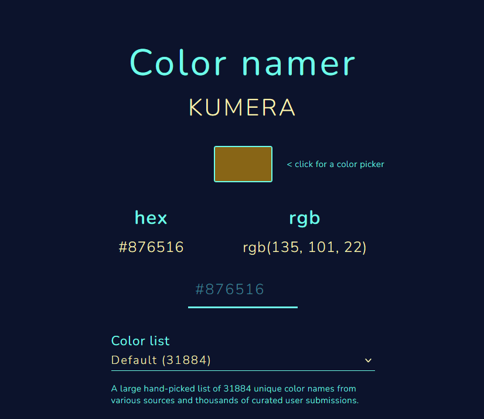

Your guide to getting out
Hey! Looks like you're trapped. And I'm assuming the rascal won't let you out until you tell it its favorite color. Don't worry, you weren't the first. So I, in good faith, am going to help you out. I do apologize that I have to make this an escape room format, but this is all so that I don't get caught. So if I were you, I would be smart and keep this in the dark.
I'd rather not tell you my name, but you can refer to me as gigachad. Putting that aside, I'm introducing you to this colornamer website. Once you find all the characters to the color's hex code, just plop them there and you'll figure out its name.
Also, you're pretty smart aren't you? WRONG. I hid a cheatsheet somewhere inside this room, and you better pray it wasn't cleaned up if you don't know your ASCII. Check the bottom of the page
I. Ya like math?
Now that you've found the cheat sheet (which I hope you have), let's put it to good use. You like math? Well, you can't avoid it forever. this one's straightforward. Just solve this equation, and you get your first digit! Here goes nothing:
II. I'm pretty good at reminders
I've been writing down notes here and there, and honestly, I feel like I'm making good use of my time whenever I write. Thanks to it, I've also learned a lot about this guy, and it's only a matter of time until I figure out its favorite color.
I know I practically have infinite storage if I type down all my notes in here, but there's just something magical about writing things down by hand. These sticky notes are a lifesaver.
I have a bunch of them by now, and I group my notes by putting symbols in the corner, telling me how important they are. Figuring out which group is the most important is up to you now.
III. Something's off
I hope you've been paying attention so far. Because if you did, you'd realize that in one of the clues I've given you so far, there's one character that doesn't seem to fit in with the crew. Could it be me? Or could it be one of you? Whatever it is, you better keep it highlighted. I should let you know that that's gonna be the third of the six characters to find out the color's code. Good boy.
V. a chair
On my first few days here, I noticed an abundance of chairs. This place is a classroom I bet, but that would break lore immersion, so let's not mention that. I'll keep this simple, inspect the chairs and their desks for anything funky, and take note of what you find. I have them set up so that you can check each one in order.
This was a real tedious one to set up, let's just hope you don't take too long going back forth between every chair.
VI. Wittle Widdles
This one has a funny backstory. I was engaging in conversation with the gremlin, hoping he'd slip up and tell me something important. That wasn't happening, but I did achieve to strike a nerve, telling him it's petty not to give me any clues or puzzles to solve.
A few days later while I was scavenging for clues, I found a file, freshly made, and it contained a riddle and a few numbers. I solved the riddle, and plotted the numbers down. And would you look at that, it formed a shape. I never told him I was making an escape room out of his dungeon, yet he went out of his way to create a puzzle of his very own.